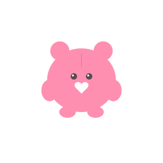

記事を書けるようにするために、GitHubから「合いことば」をもらってきます。
この端末では、これが最初の1回きりです。5分ほどで終わります。
つなぎ先のサイト：
むずかしそうな英語が並んでいますが、さわるのはこの2つだけです。ほかは変えなくて大丈夫です。
「30 days」のままだと1か月で使えなくなり、また設定し直しになります。
ghp_ ではじまる長い文字が画面に出ます。それをコピーして、下の欄に貼り付けてください。
この文字はページを閉じると二度と見られません。すぐ貼り付けてください（なくしても作り直せます）。
「つながりませんでした」と出るとき
文字の前後によけいな空白が入っていないか、コピーしそこねていないかを確認して、もう一度お試しください。
それでもだめなら、下の「つなぎ先」が合っているか確認してください。
つなぎ先を手で指定する
ふだんは自動で入るので、さわる必要はありません。
より安全な合いことばを使いたい方へ
上の手順で作る合いことばは、そのアカウントの全リポジトリを操作できます。
このサイトだけに絞りたい場合は
Fine-grained token
のページで、Repository access →「Only select repositories」でこのサイトを選び、
Permissions → Repository permissions の Contents を Read and write にして作成してください。
できた github_pat_… を同じ欄に貼れば使えます。
合いことばはこの端末のブラウザの中だけに保存され、どこにも送信されません。
共用のパソコンでは使わないでください。使い終わったら右上の「ログアウト」で消せます。
読み込み中…
デザインを変更したあと、過去の記事にも反映したいときに押します
右側は実際の見え方です。書きながら確認できます。
半角英数字とハイフンのみ。公開後の変更はリンク切れの原因になります。